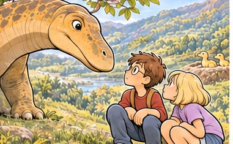
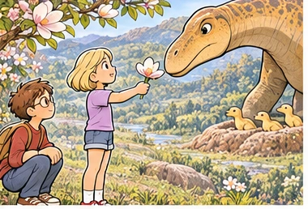
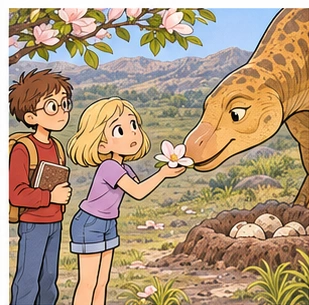
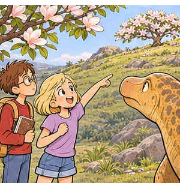
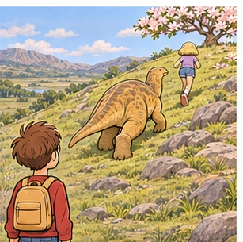
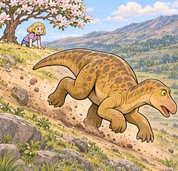
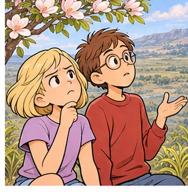
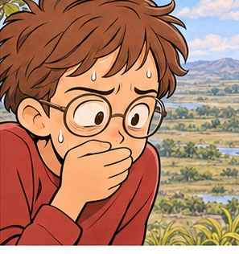
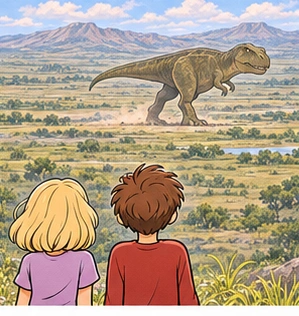
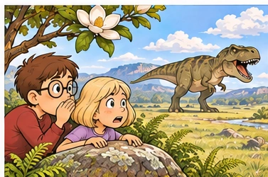

Chapter 6 · Part 2 — Dinosaur Valley
Soon the dinosaur grew quiet.
Jack raised his head.

“I don’t think she’s mad anymore,” he said.
“Thanks, Jack, for saving me,” said Annie.

“You have to use your brain,” said Jack. “You can’t just go running to a nest of babies. There’s always a mother nearby.”

Annie stood up.
“Annie!”

Too late.
Annie held out her magnolia flower to the dinosaur.

“I’m sorry I made you worry about your babies,” she said.
The dinosaur moved closer to Annie. She grabbed the flower from her. She reached for another.

“No more,” said Annie.
The dinosaur let out a sad tuba sound.

“But there are more flowers up there,” Annie said. She pointed to the top of the hill. “I’ll get you some.”

Annie hurried up the hill.
The dinosaur waddled after her.

Jack quickly examined the babies. Some were crawling out of their nests.

Where were the other mothers?
Jack took out the dinosaur book. He flipped through the pages.

He found a picture of some duck-billed dinosaurs. He read the caption:
The Anatosauruses lived in colonies. While a few mothers baby-sat the nests, others hunted for food.

So there must be more mothers close by.
“Hey, Jack!” Annie called.

Jack looked up. Annie was at the top of the hill. Feeding magnolia flowers to the giant Anatosaurus!

“She’s nice, too, Jack,” Annie said.
But suddenly the Anatosaurus made her terrible tuba sound. Annie crouched down and started to chew.

The dinosaur barged down the hill.
She seemed afraid of something.

Jack put the book down on top of his pack. He hurried up to Annie.

“I wonder why she ran away,” said Annie. “We were starting to be friends.”

Jack looked around. What he saw in the distance almost made him throw up.

An enormous ugly monster was coming across the plain.
He was walking on two big legs. And swinging a long, thick tail. And dangling two tiny arms.

He had a huge head. And his jaws were wide open.

Even from far away Jack could see his long, gleaming teeth.
“Tyrannosaurus rex!” whispered Jack.
